X25 (2025) — English translation
In this task you are asked to study the principle of operation of a camera using the example of a pinhole camera. It is a box with parallel walls, in one of which a small hole is made. Light passing through this hole forms an image on the opposite wall - the screen. The image of any point in space will be located at the intersection of the ray coming from this point through the hole and the screen.
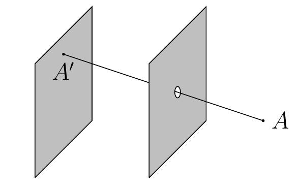
The screen produces an inverted image of objects in front of the camera, so a photograph is obtained by flipping the resulting picture. It is convenient to enter a coordinate system for the camera as shown in the figure. The coordinates $x$, $y$ and $z$ determine the positions of objects in space, and $X$ and $Y$ are the image coordinates.
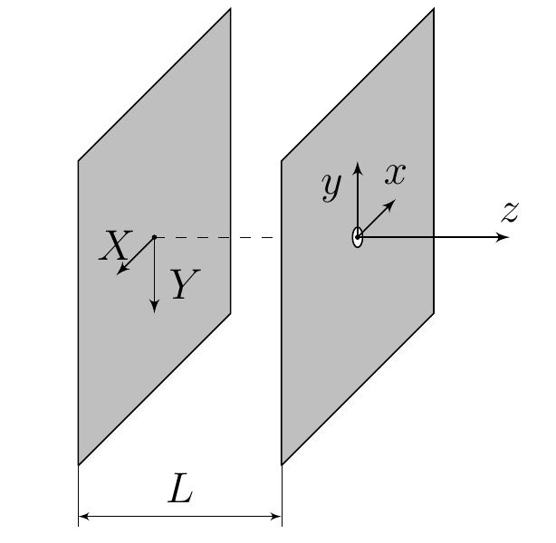
The first pinhole cameras were darkened rooms with a hole in one of the walls. Mentions of the camera obscura date back to the 5th-4th centuries BC. — followers of the Chinese philosopher Mo Tzu described the appearance of an inverted image on the wall of a darkened room. Perhaps references to the camera obscura are found in Aristotle, who wondered how a round image of the Sun could appear when it shines through a square hole. Let's study this effect in more detail. Let the Sun at sunset be filmed using a camera obscura, which is a room of length $L = 10 ~\text{м}$ with a square hole. The camera is directed at the Sun, the angular size of the Sun (the ratio of the diameter of the Sun to the distance to it from the Earth) is equal to $\alpha = 0.5^\circ$, therefore all rays can be considered paraxial.
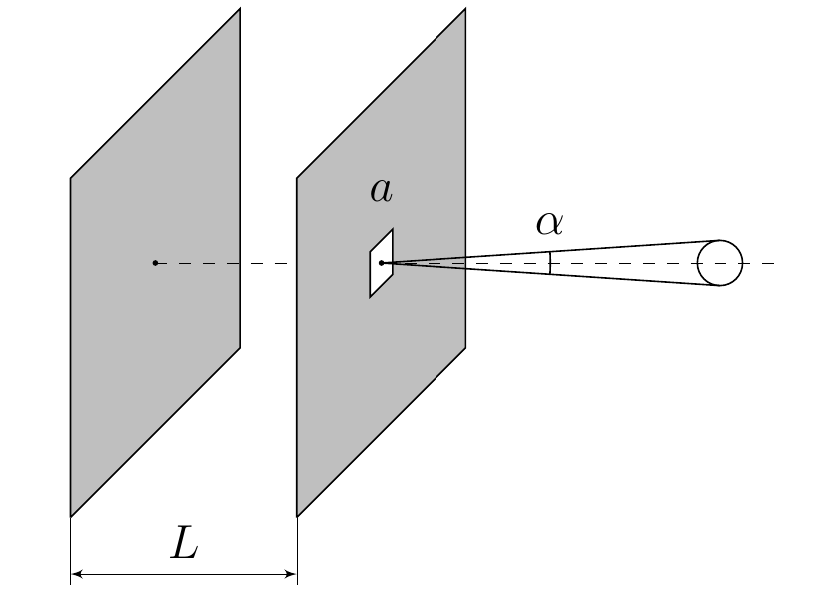
Further, in all parts of the problem, we will consider the hole to be a point hole, that is, its angular size when viewed from the screen will be much smaller than the characteristic angular sizes of the objects being photographed.
Consider photographing a person with a pinhole camera. For a qualitative description, we will consider a person as a rod of length $h$. Let the camera of length $L$ be directed horizontally and always oriented towards the middle of the person. The person moves away from the camera at speed $v$. At time $t=0$ the distance between the camera and the person is $l_0$. Consider that the entire image of a person is located on the screen.
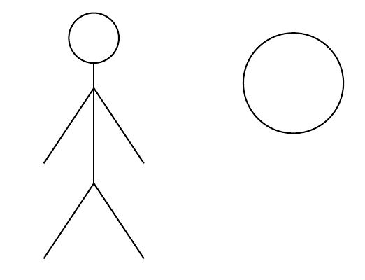
Let a square flag with side $a$ be suspended by one of its vertices from a balloon rising vertically upward with speed $v$. A camera obscura of length $L$ films the flag and is always aimed at its center. Consider that the camera is rotated so that its opening is motionless. Initially, the center of the flag and the camera are at the same height at a distance $l_0$ from each other, and the plane of the flag at this moment is perpendicular to the direction of the camera. The $AC$ diagonal is vertical at all times and the flag does not rotate.
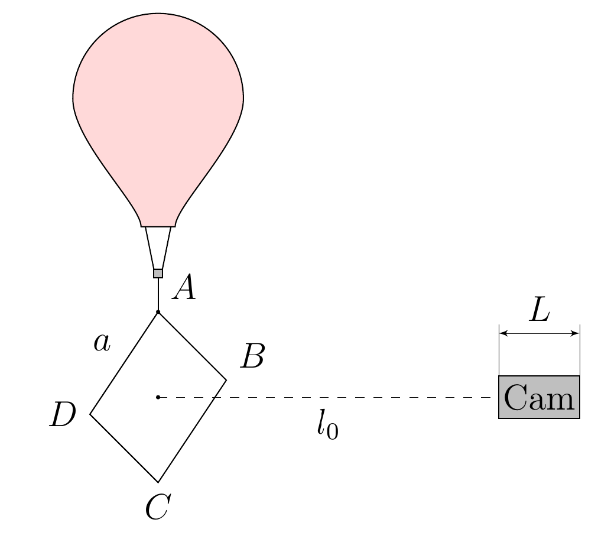
Further, it is known that $l_0 = 3\text{м}$, $v = 1\text{м/с}$.
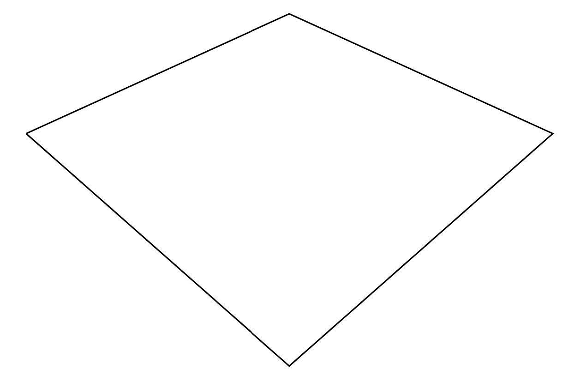
In this part of the problem we will study a photograph of the horizon obtained using a horizontal pinhole camera. The radius of the Earth is $R = 6378\text{км}$; surface irregularities can be neglected.
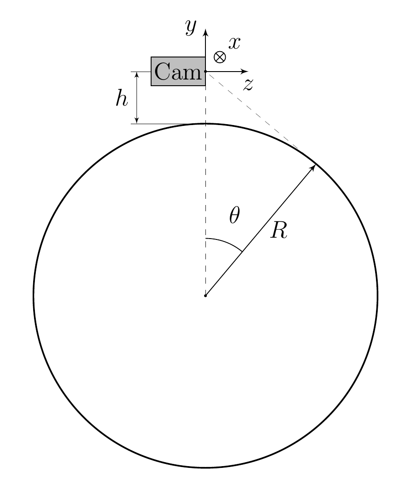
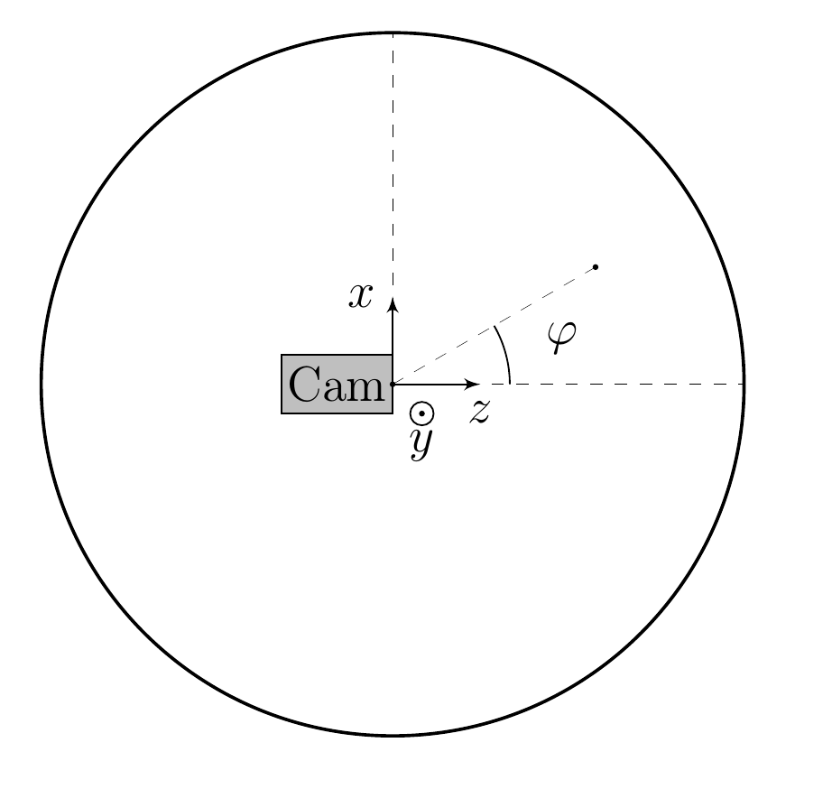
We will characterize the position of the horizon point by the angles $\varphi$ and $\theta$ (see figure). To begin with, let’s neglect the influence of the atmosphere.
Note: The following expression may be useful: $$\cfrac{1}{\cos^2\varphi} = 1+\tan^2\varphi.$$
The figure shows part of a photograph of the horizon in an unknown, but identical scale along the axes.
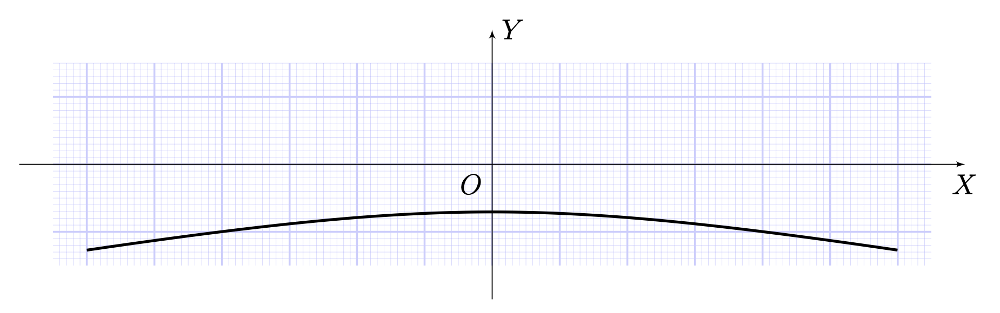
In reality, the rays entering the camera do not travel in a straight line. The path of the rays characterizing the horizon in the photograph is shown in the figure.
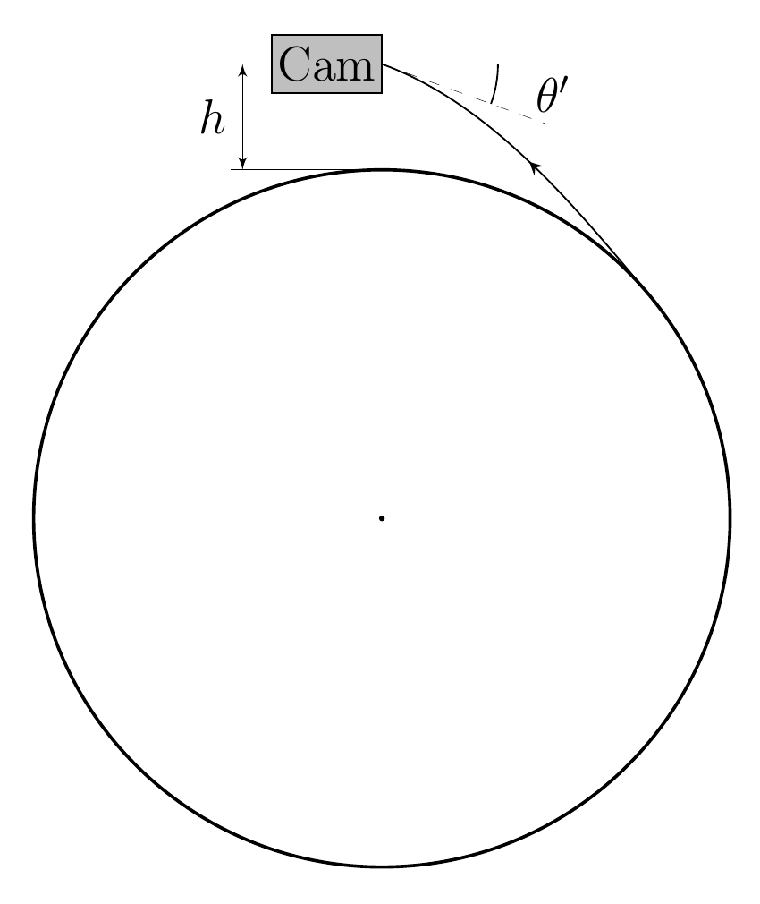
The refractive index of air depends linearly on density: $n = 1+\alpha \rho_{air}$. The difference between the refractive index of air at the Earth's surface and unity is $n_0-1 = 2.74\cdot 10^{-4}$. The difference in the refractive index from unity at the photographic height can be neglected.
In what follows, we will neglect the influence of the atmosphere.
To analyze the boundaries of an image of an object, you may need knowledge of conic sections. A cone is a surface formed in space by a number of rays (forming a cone) connecting all points of a certain flat curve (cone guide) with a given point in space (the vertex of the cone). A special case of a cone is a straight circular cone, its directing curve is a circle, and the vertex lies on the axis of symmetry of this circle. Note that the boundaries of the image of an object in a camera obscura are formed by rays tangent to it passing through the camera opening. These rays form a cone. The image of the boundaries of an object is a section of this cone by the plane of the screen. The case of a circular cone may be of particular interest. In this case, the section by the plane will be a second-order curve: an ellipse at $90^\circ - \psi > \alpha$, a parabola at $90^\circ - \psi = \alpha$, a hyperbola $90^\circ - \psi < \alpha$.
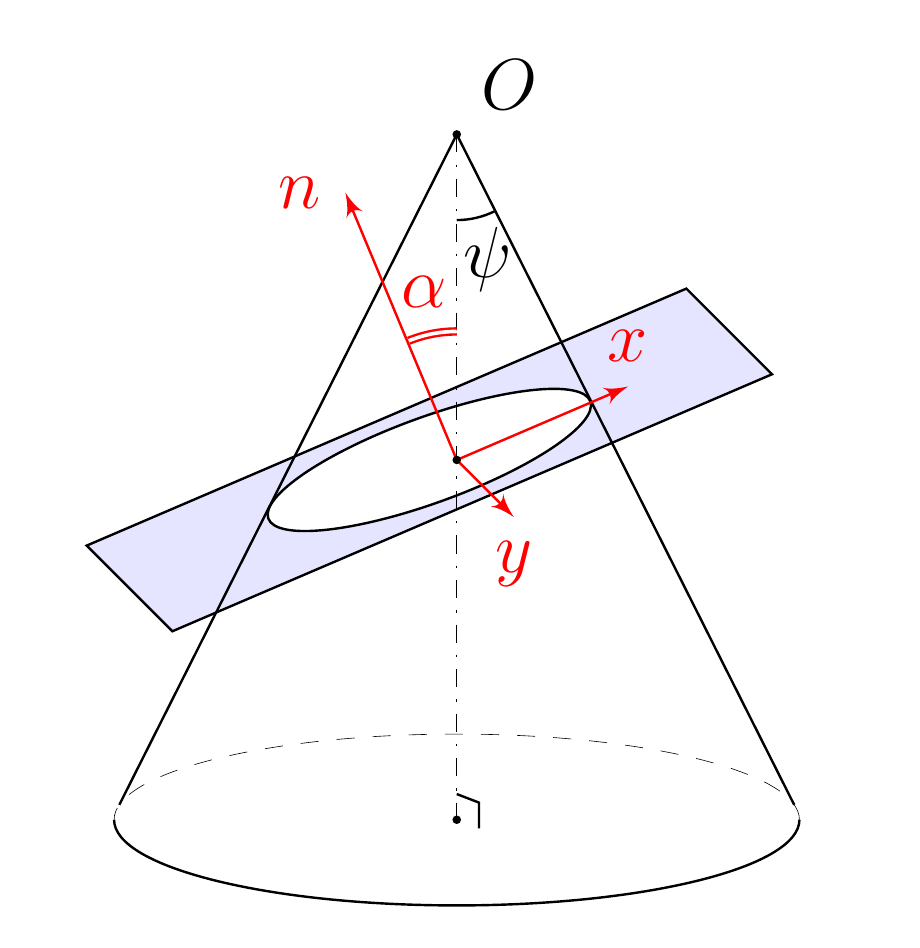
Now let's consider photographing the horizon using a camera aimed at one of its points.
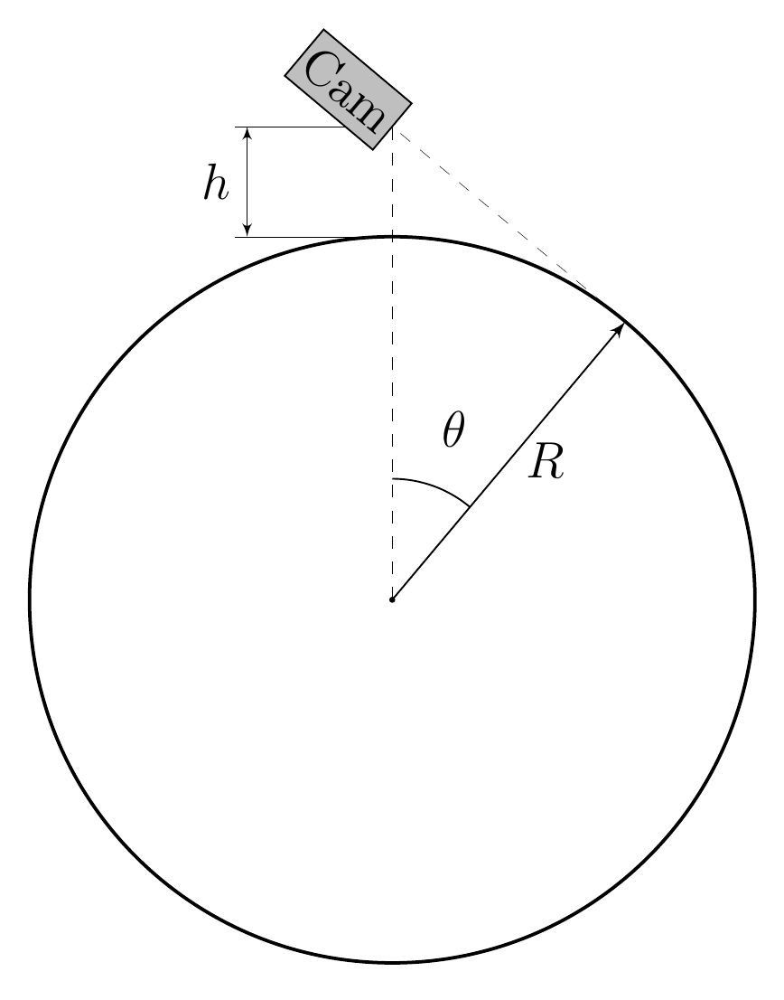
At low altitudes the camera can only capture a certain part of the horizon, but at high altitudes it can be seen completely.
The visible fraction of the horizon is determined by the ratio of the length of the horizon arc, consisting of points falling on the photograph, to the length of the entire horizon circumference.
Note: The angle $\theta$ shown in the figure may be useful for intermediate calculations.
Source: https://pho.rs/p/4202